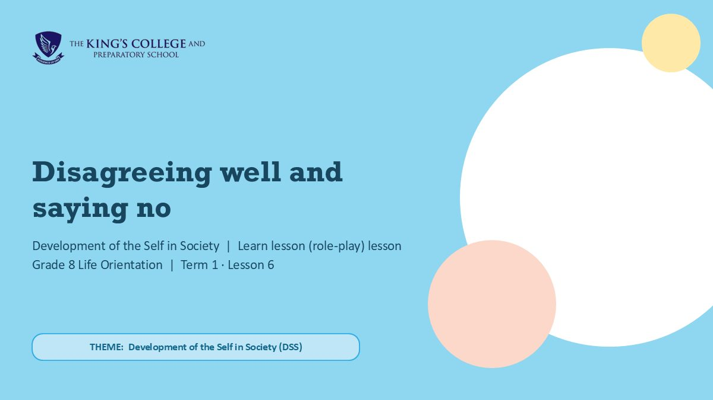

Term 1 · Lesson 6 · Learn lesson (role-play)
Disagreeing well and saying no
Start here
Today I will
- Use five steps to solve a conflict
- Speak with 'I' statements
- Say no to pressure, calmly and firmly
What's the worst way you have seen a fight between friends handled? (No names!)
Words to know
- Conflict
- A disagreement between people who want different things.
- 'I' statement
- Talking about how you feel ('I felt hurt when…') instead of blaming ('You always…').
- Peer pressure
- Feeling pushed to do what people your age are doing so that you fit in.
- Assertive
- Standing up for yourself calmly and clearly, without being rude or aggressive.
- Aggressive
- Forcing your view by shouting, threatening or hurting.
- Compromise
- Each side gives a little to find an answer both can accept.
Slides

Videos
Notes
Disagreements are a normal part of life. What matters is how we handle them. Learning to resolve conflict and to say no to negative pressure protects your friendships and your values.
Conflict
Conflict is a disagreement between people who want different things. It is not always bad: handled well, it can lead to understanding and better solutions. Handled badly (shouting, ignoring, posting about it online), it damages relationships.
The IDEAL problem-solving steps
- I: Identify the problem. Say what is wrong without attacking the person.
- D: Describe the options. Think of at least three possible solutions.
- E: Evaluate each option. What could happen with each one? Is it fair to both sides?
- A: Act on the best option, for example by talking face to face using 'I' statements.
- L: Look back. Did it work? What would you do differently next time?
Your group partner sent their part of a project at 23:00 the night before it was due. I: we didn't agree on a time. D: complain in the group chat / say nothing / talk to them at break. E: the chat would embarrass them; saying nothing leaves you angry; talking privately is fair. A: talk at break. L: next time, agree on a deadline at the start.
'I' statements
An 'I' statement describes how YOU feel and what happened, instead of blaming. It lowers defensiveness. Pattern: 'I feel … when … because … .'
Blaming: 'You always leave me out!' 'I' statement: 'I feel left out when plans are made without me.'
Assertive, not aggressive or passive
- Passive: giving in or staying silent to avoid trouble, even when something is wrong.
- Aggressive: forcing your view by shouting, threatening or hurting.
- Assertive: standing up for yourself calmly, clearly and respectfully. This is the healthy way.
Saying no to peer pressure
Peer pressure is feeling pushed to do what people your age are doing so that you fit in. It can be negative (e.g. pressure to bunk, vape or bully) or positive (e.g. friends who encourage you to study or join a team). Ways to say no assertively:
- Say no clearly: 'No thanks.'
- Give a reason: 'I've got a match tomorrow.' / 'It's not for me.'
- Suggest something else: 'Let's go and get something to eat instead.'
- Walk away and spend time with people who respect your choices.
A biblical view
In Matthew 18:15 Jesus teaches us to go privately to a person who has wronged us. A private conversation protects the other person's dignity and makes reconciliation easier than a public argument.
Different ways people respond to conflict
| Style | What it looks like | Result |
|---|---|---|
| Avoiding | Ignoring the problem, hoping it goes away | The problem often grows; resentment builds |
| Giving in | Doing what the other person wants to keep the peace | Your needs are ignored; you may feel used |
| Fighting | Shouting, insulting, posting online | Relationships are damaged; it may become violent |
| Solving together | Talking calmly, listening, finding a fair solution (IDEAL) | Both people feel respected; the relationship survives |
Why peer pressure is so strong in Grade 8
In early adolescence, belonging to a group feels extremely important. Being left out can feel like a disaster. This is why many teenagers do things in a group that they would never do alone. Knowing this helps you to pause and ask: 'Is this really what I want, or am I just afraid of being left out?' Choosing friends who share your values makes it much easier to say no.
Case study: The voice note
Before the Grade 8 camp, Aarav sent Thabo a private voice note saying he was nervous about sleeping away from home. As a joke, Thabo forwarded it to the class group chat and many learners laughed. Aarav was hurt and angry and wanted to post something embarrassing about Thabo. Mia suggested he wait until he was calm. The next day Aarav spoke to Thabo privately: 'I felt embarrassed when you shared my voice note with the class.' Thabo apologised, deleted the message and explained to the class that it was not okay. Their friendship survived.
Questions to think about: Which IDEAL steps did Aarav use? What would have happened if he had posted something back? What did Thabo learn about trust?
Worked exam answer
Question: Explain why an 'I' statement is better than blaming the other person. (1 x 2) (2)
Answer: An 'I' statement describes how you feel without attacking the other person ✓, so they are less likely to become defensive and more likely to listen and solve the problem ✓.
Learn the five IDEAL steps in order, be able to write an 'I' statement, and differentiate between assertive and aggressive behaviour.
Attack the problem, not the person.
Jesus says to go to the person privately first. Why might that work better than posting about it in a group chat?
In class: Role-play it
- Card A: two friends both want to be captain. Solve it with IDEAL.
- Card B: someone pressures a friend to bunk a lesson. Say no assertively.
- Two learners act, and one observer ticks the steps used.
- Swap roles for the second card.
- One group performs for the class.
Test yourself
- What does the 'E' in IDEAL stand for?
- Change to an 'I' statement: 'You always leave me out!'
- What is the difference between assertive and aggressive?
Show answers
1. Evaluate (each option). 2. e.g. 'I feel left out when plans are made without me.' 3. Assertive is calm and respectful; aggressive forces or hurts.
Finished early?
Solve a disagreement step by step using IDEAL.
- Scenario: a friend borrowed your calculator and gave it back broken, and laughed it off.
- In your LO book, write one line for each IDEAL step: Identify, Describe (three options), Evaluate, Act, Look back.
- Write the exact 'I' statement you would use: 'I feel … when … because … .'
- Circle the option you chose and write why it is fair to both of you.